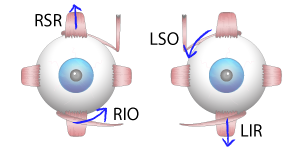
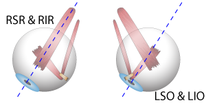
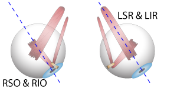
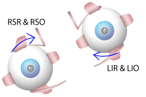
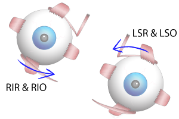

Nếu mắt phải là mắt lác trên, thì có 2 nhóm khả năng xảy ra là:
1) Yếu liệt các cơ đưa nhãn cầu mắt phải xuống dưới: Cơ chéo trên (RSO) hoặc Cơ trực dưới (RIR)
2) Yếu liệt các cơ đưa nhãn cầu mắt trái lên trên: Cơ trực trên (LSR) hoặc Cơ chéo dưới (LIO)
Ta sẽ xem xét tất cả các trường hợp này.

Nếu mắt trái là mắt lác trên, thì có 2 nhóm khả năng xảy ra là:
1) Yếu liệt các cơ đưa nhãn cầu mắt trái xuống dưới: Cơ chéo trên (LSO) hoặc Cơ trực dưới (LIR)
2) Yếu liệt các cơ đưa nhãn cầu mắt phải lên trên: Cơ trực trên (PSR) hoặc Cơ chéo dưới (RIO)
Ta sẽ xem xét tất cả các trường hợp này.
Lác trên tăng lên ở tư thế liếc trái hay liếc phải?

Khi ta nhìn về bên phải, các cơ tham gia vào động tác này gồm các cơ trực mắt phải và các cơ chéo mắt trái.
Tức là có 4 cơ có thể bị yếu liệt: Cơ trực trên MP (RSR), Cơ trực dưới MP (RIR), Cơ chéo trên MT (LSO), Cơ chéo dưới MT (LIO)
Ta xem xét 4 cơ này.

Khi ta nhìn về bên trái, các cơ tham gia vào động tác này gồm các cơ trực mắt trái và các cơ chéo mắt phải.
Tức là có 4 cơ có thể bị yếu liệt: Cơ trực trên MT (LSR), Cơ trực dưới MT (LIR), Cơ chéo trên MP (RSO), Cơ chéo dưới MP (RIO)
Ta xem xét 4 cơ này.
Lác trên tăng lên khi nghiêng đầu sang trái hay phải?

Khi nghiêng đầu sang phải, mắt phải sẽ xoáy trong và mắt trái sẽ xoáy ngoài để bù trừ tư thế
Các cơ tham gia vào động rác này gồm:
Động tác xoáy trong MP: Cơ trực trên MP (RSR), Cơ chéo trên MP (RSO)
Động tác xoáy ngoài MT: Cơ trực dưới MT (LIR), Cơ chéo dưới MT (LIO)
Một trong 4 cơ này bị yếu liệt.

Khi nghiêng đầu sang trái, mắt trái sẽ xoáy trong và mắt phải sẽ xoáy ngoài để bù trừ tư thế
Các cơ tham gia vào động rác này gồm:
Động tác xoáy trong MT: Cơ trực trên MT (LSR), Cơ chéo trên MT (LSO)
Động tác xoáy ngoài MP: Cơ trực dưới MP (RIR), Cơ chéo dưới MP (RIO)
Một trong 4 cơ này bị yếu liệt.
<HƯỚNG DẪN
Thử nghiệm Bielchovsky được dùng để đánh giá lác đứng.
Thích hợp cho các đánh giá một số rối loạn thần kinh có liên quan nhãn khoa; cho kết quả kém chính xác hơn với những bệnh nhân đã phẫu thuật cơ vận nhãn.
Bằng cách kiểm tra sự thay đổi độ lác đứng ở các tư thế, ta dùng phương pháp bao vây và loại trừ để tìm ra cơ bị yếu liệt.